Solving problems at the intersection of business goals and technical execution.
An experienced professional with expertise in SaaS, databases, integrations, data science, and AI-driven search and GenAI, I focus on solving problems at the intersection of business goals and technical execution. With experience across multiple industries, including healthcare and enterprise platforms operating at scale, I use Python, JavaScript/TypeScript, and SQL to build prototypes, integration proofs, and measurable validation workflows (quality, latency, and cost). I communicate tradeoffs clearly to both technical teams and executive stakeholders.
I am passionate about empathetically learning about customers' challenges and partnering with them to present the right solution. I excel at presenting and building out demos and integrations across a variety of industries to diverse audiences, both technical and non-technical audiences, including C-Suite executives and Fortune 500 companies.
My technical foundation enables me to integrate complex datasets and design applied analytics and AI systems in cloud environments. I have experience developing ML and GenAI-enabled solutions and architecture plans that improve customer-facing experiences and operational decision-making with measurable outcomes.
As a technical product manager, I bring an agile and process-oriented approach to managing platform, web, and internal tooling. My expertise in leading cross-functional teams has helped me deliver new launches and evolve complex existing products through clear scope, metrics, and cross-functional alignment.
In addition to being a strong individual contributor, I have experience managing teams and unlocking their full potential. I help individuals develop their careers by supporting career development, feedback, and performance expectations.
Fourteen years across search, AI, healthcare data and enterprise platforms.
2023 - Present
2022 - 2023
2020 - 2022
2019 - 2020
2017 - 2019
2015 - 2017
2013 - 2015
2012 - 2013
A document splitting and identification model developed at Iron Mountain for large lender clients.
View published patent →Over 10 years of experience with selling, implementation and supporting SaaS software across multiple industries. I am specifically experienced with cloud software which focuses on data integration, transformation and analytics. Treasure AI's CDP and Arcadia's Analytics platforms are two prominent examples.
Experience with Agile methodologies (Scrum, Kanban), grooming and planning backlogs. Experienced as a Jira Admin, creating, managing and supporting project workflows. My technical experience is a large asset in communicating with and gaining the trust of engineers. I have experience serving as product owner for platform, web, as well as internal automation and telemetry products.
Have developed my own predictive models, as well as designed architectures for deploying ML workflows with monitoring, iteration, and feedback loops. At Iron Mountain, my team and I received a patent for a document splitting and identification model that we developed for our large lender clients. At Arcadia, while using clinical, claims, and demographic data I built a predictive model to predict how likely a patient would be a "No Show" to their doctor appointment.
Highly experienced with creating, managing and architecting databases. Very strong SQL skills and have created very complicated queries, stored procedures as well as integrations via APIs to external systems. Both SQL and NoSQL databases. Have conducted data model designs, database development standards, implementation and management of data warehouses and data analytics systems.
Have worked across AWS, Azure and GCP. And have years of experience using and architecting cloud services and software. Have used cloud data products like Snowflake, Databricks, Splunk and Elastic. Experience designing cloud architectures across batch, streaming, serverless, and containerized deployments.
Have worked across several industries (Healthcare, Insurance, Consumer, Pharma, etc.). Presented to C-Suites. Have accrued years of client-facing experience, starting with onsite weekly consulting earlier in my career. I enjoy learning about businesses and industry trends, and even outside of work I stay up to date on business, tech news and review quarterly earnings reports of public companies I follow.
As an Industrial Engineer by training, I have a mind for process improvement, efficiency and using data to make business decisions. I am Six Sigma certified and a strong believer in measuring outcomes to learn and make better informed business decisions from.
Have written full stack applications using Python, Node, JavaScript and SQL as well as integrating data from numerous external systems via APIs, message queues, ETLs and webhooks. Am familiar with a lot of common JavaScript libraries like jQuery, Bootstrap, Angular, D3.
Experienced with creating custom, and sometimes interactive, javascript visualizations using D3. Additionally have created dashboards and models with Sisense, QuickSight, Tableau, PowerBI, Qlik. You can view some examples here. I am also proficient with Adobe Illustrator, Photoshop and Xd.
Dashboards, models and data tools — mostly built end to end. Step through the sets below; hover any frame for the detail.
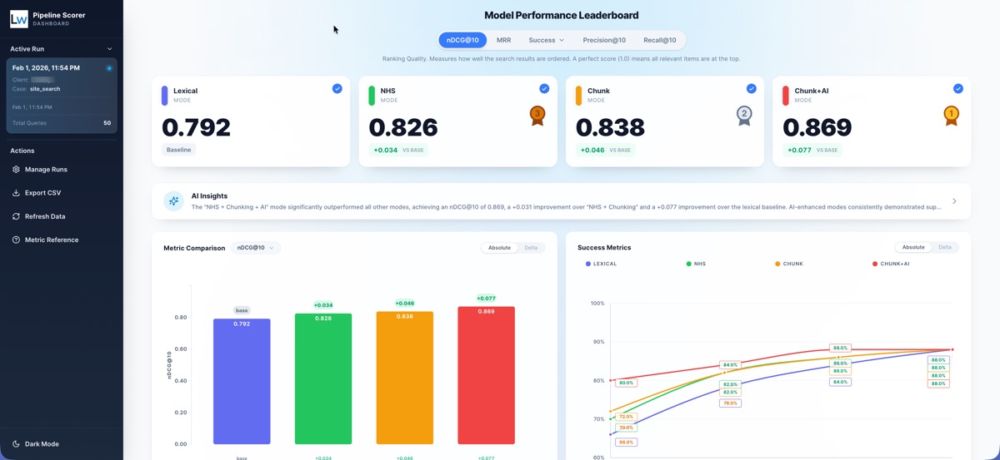
Built an interactive dashboard to evaluate and clearly communicate search relevance lift across multiple retrieval strategies, combining key metrics (nDCG, MRR, Success@K) with an LLM-as-judge to score result quality at scale.
Built an interactive dashboard to evaluate and clearly communicate search relevance lift across multiple retrieval strategies, combining key metrics (nDCG, MRR, Success@K) with an LLM-as-judge to score result quality at scale.
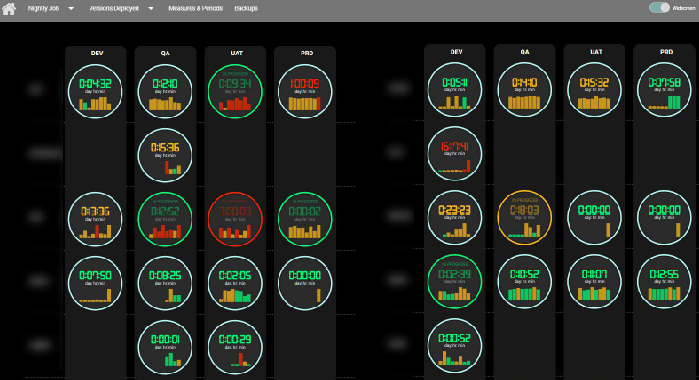
A real-time database job monitoring dashboard I created, using D3 in the front end, Node.js and SQL Server in the back-end.
A real-time database job monitoring dashboard I created, using D3 in the front end, Node.js and SQL Server in the back-end.
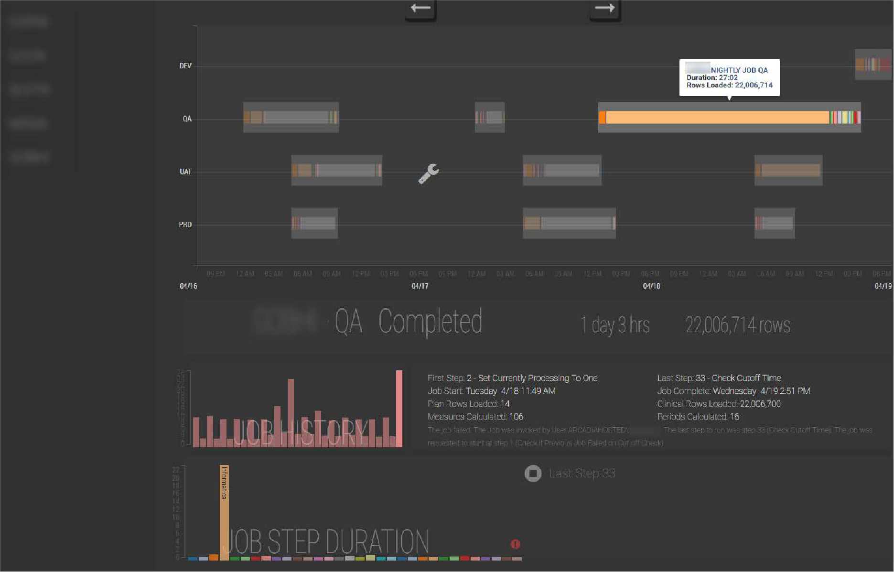
A real-time database job monitoring dashboard I created, using D3 in the front end, Node.js, Python and SQL Server in the back-end.
A real-time database job monitoring dashboard I created, using D3 in the front end, Node.js, Python and SQL Server in the back-end.
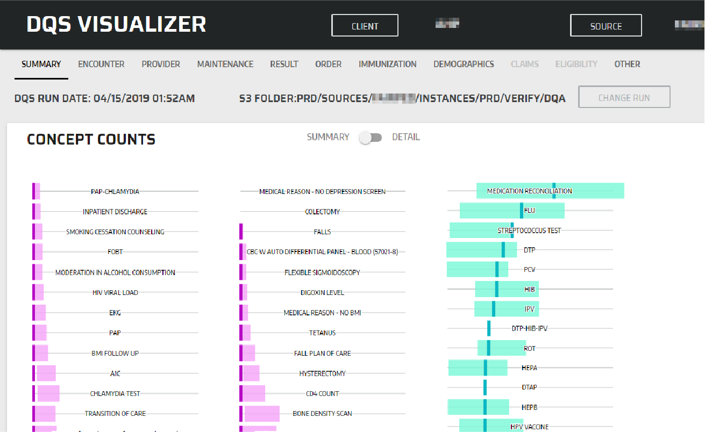
Interactive set of D3 dashboards that in real time read a set of flat files from S3, and turned them into a set of charts making the output much easier to understand. Built with a Node Express server, Python for data integration and D3 for the front end.
Interactive set of D3 dashboards that in real time read a set of flat files from S3, and turned them into a set of charts making the output much easier to understand. Built with a Node Express server, Python for data integration and D3 for the front end.
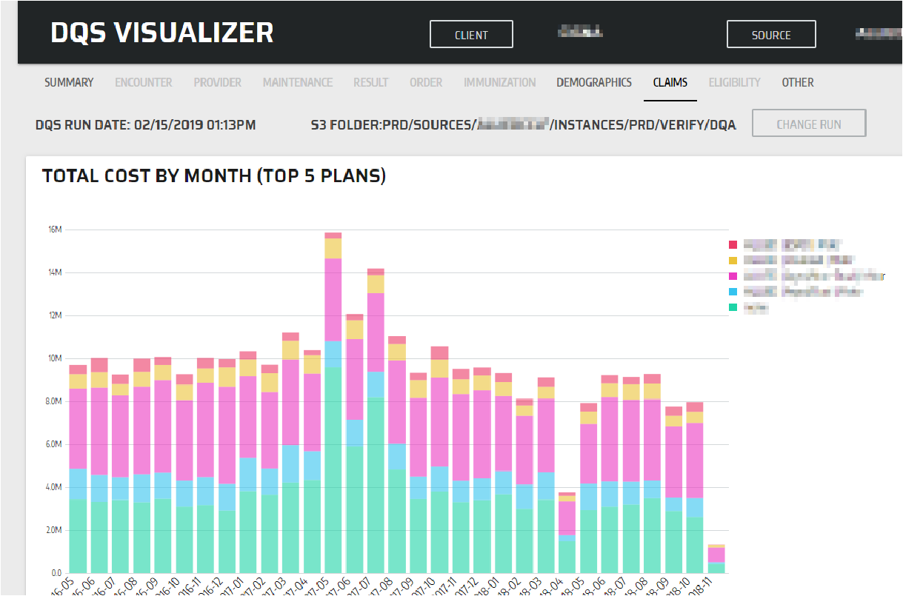
Interactive set of D3 dashboards that in real time read a set of flat files from S3, and turned them into a set of charts making the output much easier to understand.
Interactive set of D3 dashboards that in real time read a set of flat files from S3, and turned them into a set of charts making the output much easier to understand.
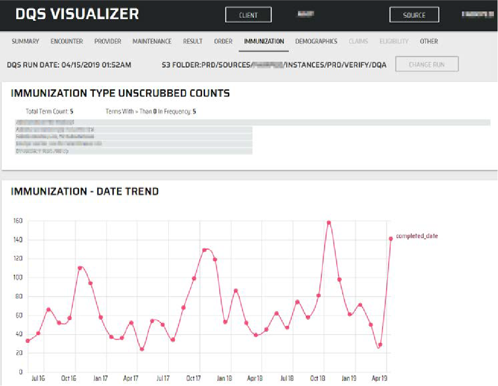
Built using a Node Express server, Python for data integration and transformation and D3 and other JavaScript libraries for the front end.
Built using a Node Express server, Python for data integration and transformation and D3 and other JavaScript libraries for the front end.
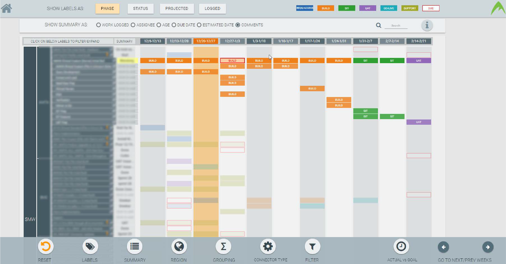
Interactive work scheduling application I developed using a myriad of data sources including a python JIRA API integration, as well as data collected from database, and logs & files from AWS.
Interactive work scheduling application I developed using a myriad of data sources including a python JIRA API integration, as well as data collected from database, and logs & files from AWS.
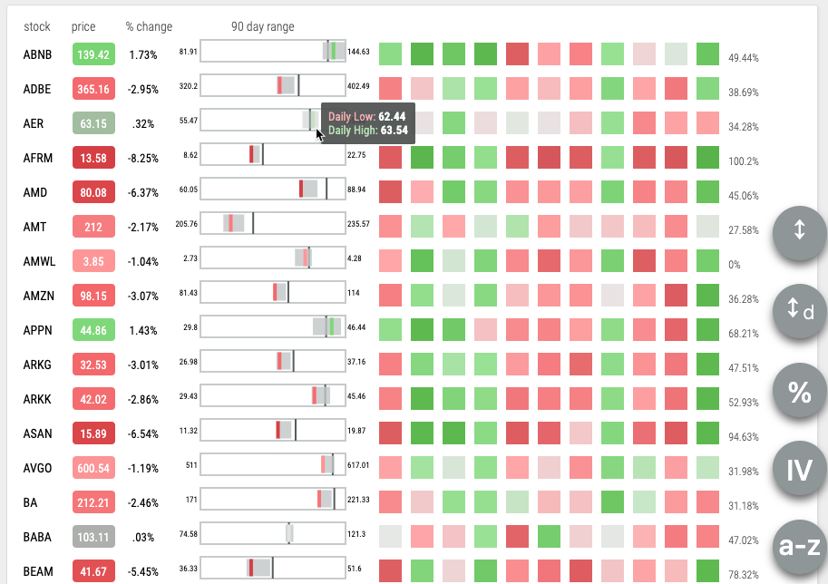
Using a GCP cloud function, running a python script to obtain latest stock data from yahoo finance API for a set of stocks on my watchlist. The output is displayed in real time, in a custom chart made using D3.
Using a GCP cloud function, running a python script to obtain latest stock data from yahoo finance API for a set of stocks on my watchlist. The output is displayed in real time, in a custom chart made using D3.
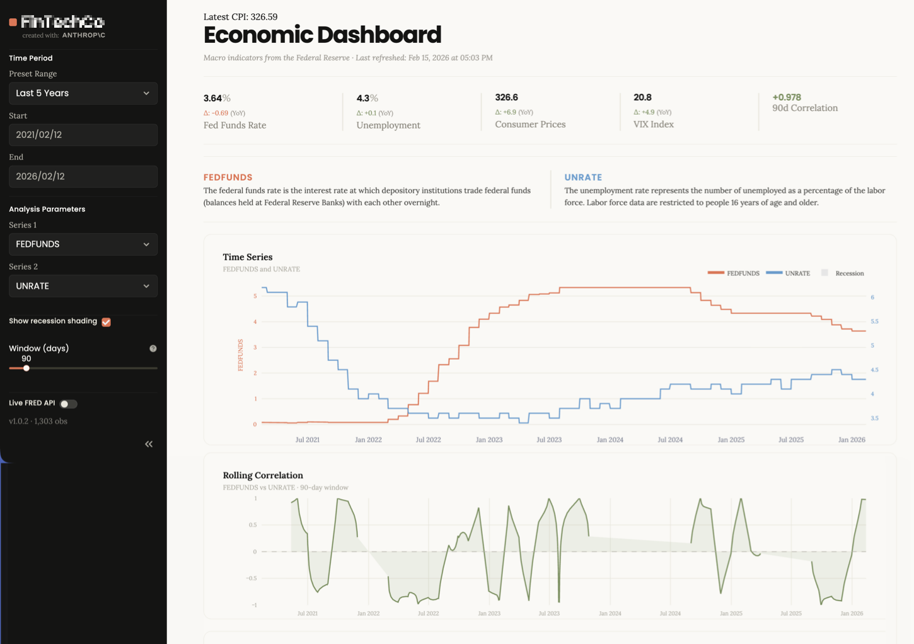
Built an interactive macroeconomic dashboard that pulls live Federal Reserve (FRED) data to track key indicators over time and analyze how they relate — series, time ranges, recession shading, and rolling correlation windows.
Built an interactive macroeconomic dashboard that pulls live Federal Reserve (FRED) data to track key indicators over time and analyze how they relate — series, time ranges, recession shading, and rolling correlation windows.
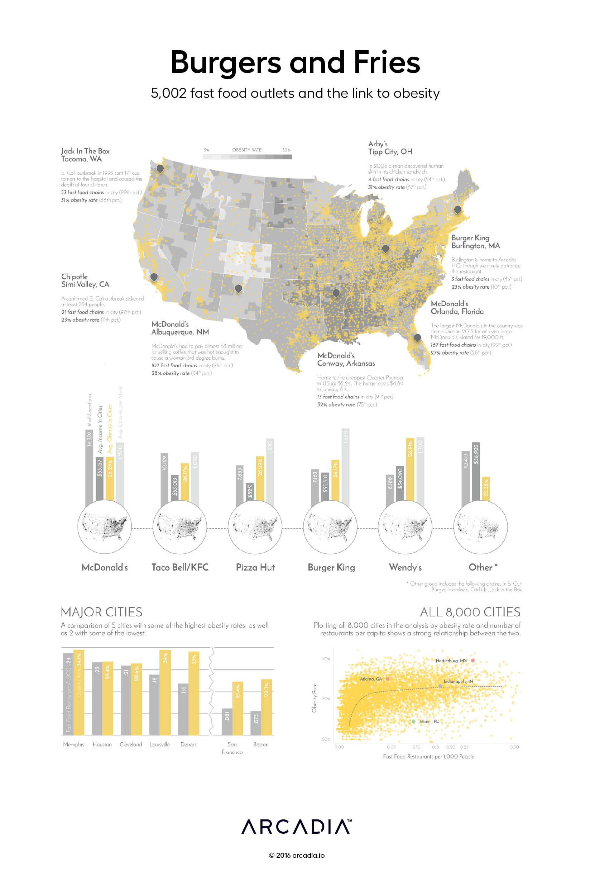
Infographic for a poster used at a conference, made in D3 and Adobe Illustrator, using publicly available data.
Infographic for a poster used at a conference, made in D3 and Adobe Illustrator, using publicly available data.
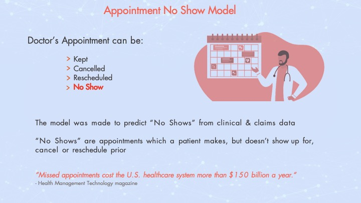
The model was made to predict “No Shows” from clinical & claims data. “No Shows” are appointments which a patient makes, but doesn’t show up for, cancel or reschedule prior.
The model was made to predict “No Shows” from clinical & claims data. “No Shows” are appointments which a patient makes, but doesn’t show up for, cancel or reschedule prior.
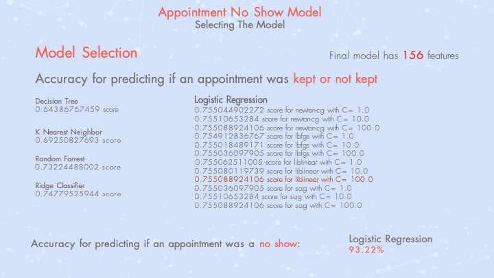
Using different hyperparameters as well as models to choose best model and parameters. Evaluated: Decision Tree vs K Nearest Neighbor vs Random Forest vs Ridge Classifier vs Logistic Regression.
Using different hyperparameters as well as models to choose best model and parameters. Evaluated: Decision Tree vs K Nearest Neighbor vs Random Forest vs Ridge Classifier vs Logistic Regression.